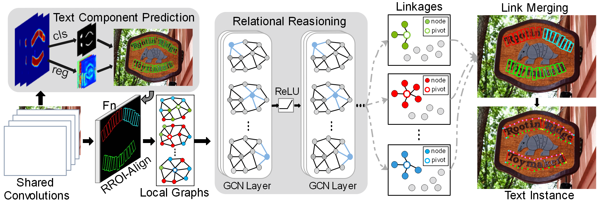
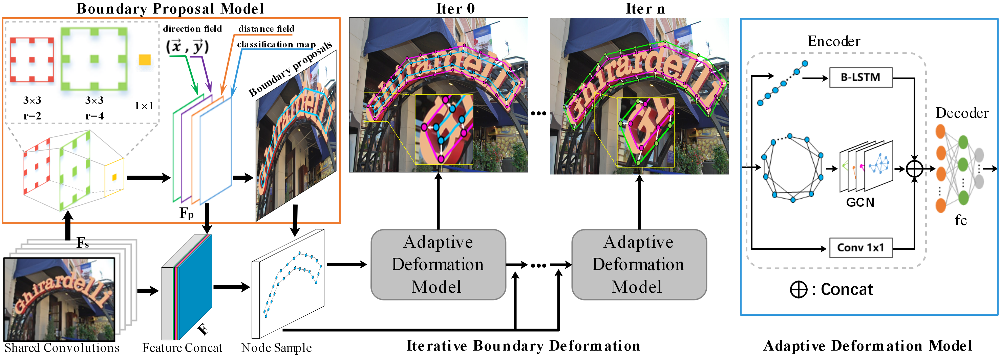
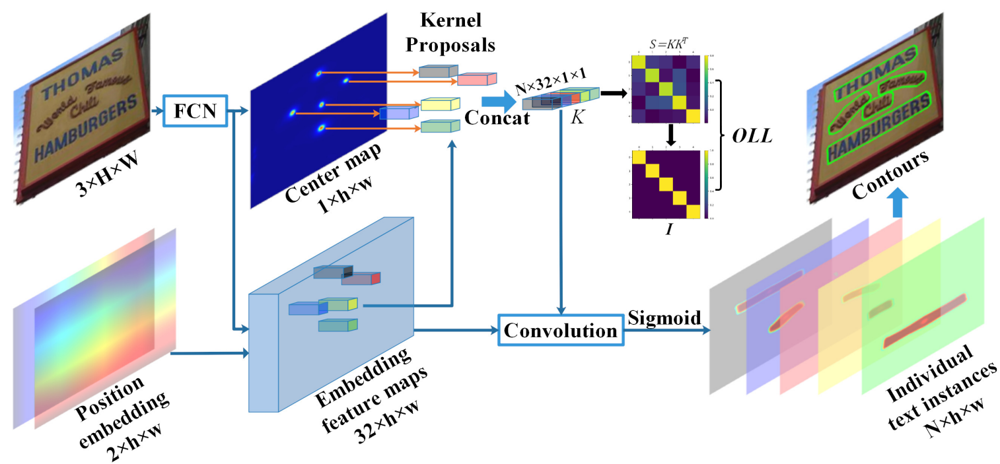
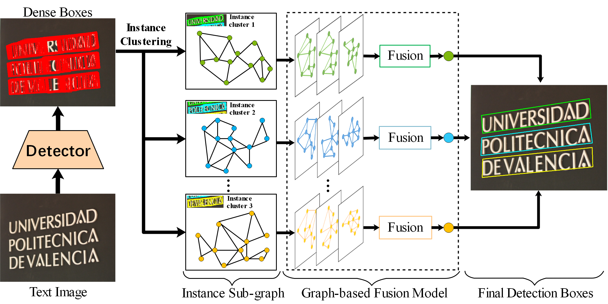
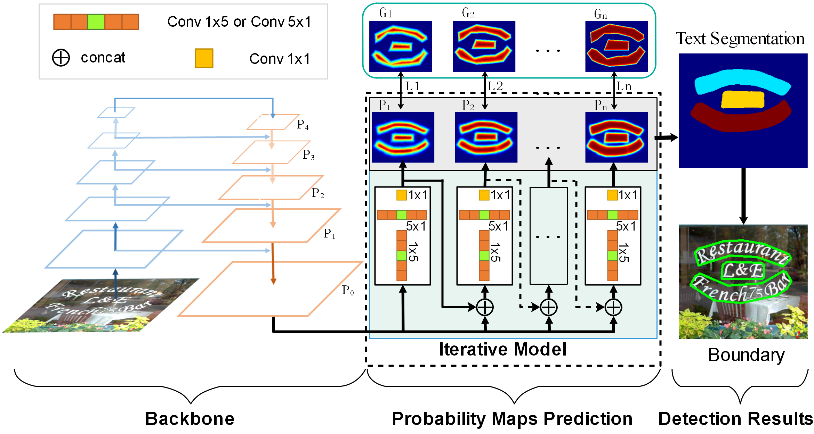
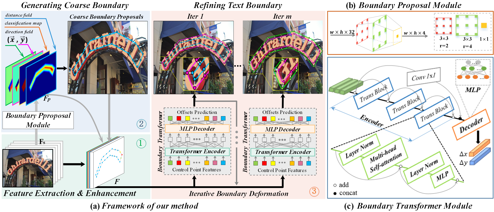
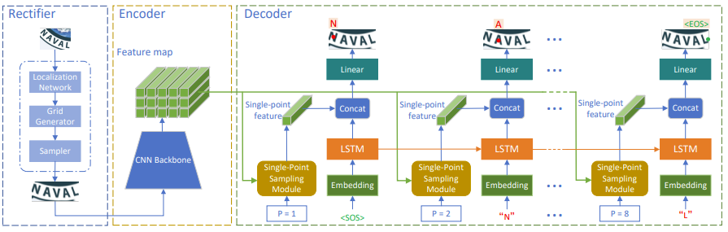

PRIR Lab, University of Science and Technology Beijing
News
-
2023/06/12
TMM 2023
My paper "Arbitrary Shape Text Detection via Boundary Transformer" has been accepted by IEEE Transactions on Multimedia (TMM) 2023!
-
2023/04/18
2023年腾讯犀牛鸟精英人才计划
入选2023年腾讯犀牛鸟精英人才计划, 2023年全球共有55名同学入选该计划。
-
2022/12/23
PRCV 2022
Awarded CCF-CV Fellowship (CCF-CV 学术新锐奖), Only 3 students in China were awarded for their research in computer vision every year.
-
2022/09/05
CICAI 2022
Our paper "Scene Text Recognition with Single-Point Decoding Network" has been accepted by CAAI International Conference on Artificial Intelligence 2022!
-
2022/05/16
TPAMI 2022
My paper "Arbitrary Shape Text Detection via Segmentation with Probability Maps" has been accepted by IEEE Transactions on Pattern Analysis and Machine Intelligence (TPAMI) 2022!
-
2022/02/16
APIN 2022
My paper "Graph Fusion Network for Multi-Oriented Object Detection" has been accepted by Applied Intelligence (APIN) 2022!
-
2022/02/15
TNNLS 2022
My paper "Kernel Proposal Network for Arbitrary Shape Text Detection" has been accepted by TNNLS 2022!
-
2021/07/23
ICCV 2021
My paper "Adaptive Boundary Proposal Network for Arbitrary Shape Text Detection" has been accepted by ICCV 2021 (Poster)!
-
2020/02/27
CVPR 2020
My paper "Deep Relational Reasoning Graph Network for Arbitrary Shape Text Detection" has been accepted by CVPR 2020 (Oral)!
Education
- 2021/09~Now: PhD on Computer Science and Technology. PRIR Lab, University of Science and Technology Beijing.
- 2018/09~2021/01: Master Degree on Computer Science and Technology. PRIR Lab, University of Science and Technology Beijing.
- 2014/09~2018/06: Bachelor Degree on IoT Engineering. School of Computer and Communication Engineering, University of Science and Technology Beijing.
Work Experiences
Related Work
1.Shi-Xue Zhang, Xiaobin Zhu, Jie-Bo Hou, Chang Liu, Chun Yang, Hongfa Wang, Xu-Cheng Yin,”Deep Relational Reasoning Graph Network for Arbitrary Shape Text Detection”,CVPR 2020 Oral,CCF A.
2.Shi-Xue Zhang, Xiaobin Zhu, Chun Yang, Hongfa Wang, Xu-Cheng Yin, “Adaptive Boundary Proposal Network for Arbitrary Shape Text Detection”, ICCV 2021 Poster, CCF A.
3.Shi-Xue Zhang, Xiaobin Zhu, Lei Chen, Jie-Bo Hou, Xu-Cheng Yin,”Arbitrary Shape Text Detection via Segmentation with Probability Maps”, T-PAMI 2022, JCR一区, CCF A.
4.Shi-Xue Zhang, Xiaobin Zhu, Jie-Bo Hou, Chun Yang, Xu-Cheng Yin,”Kernel Proposal Network for Arbitrary Shape Text Detection”,TNNLS 2022, JCR一区, CCF B.
5.Shi-Xue Zhang, Chun Yang, Xiaobin Zhu, Xu-Cheng Yin,”Arbitrary Shape Text Detection via Boundary Transformer”，TMM 2023, JCR一区, CCF B.
6.Shi-Xue Zhang, Xiaobin Zhu, Jie-Bo Hou, Xu-Cheng Yin,”Graph Fusion Network for Multi-Oriented Object Detection”，Applied Intelligence (APIN), JCR二区, CCF C.
7.Lei Chen, Haibo Qin, Shi-Xue Zhang, Chun Yang, Xu-Cheng Yin ,”Scene Text Recognition with Single-Point Decoding Network”. CICAI 2022. (EI).
学业及学术奖励（Academic Award）
博士（Ph.D）
硕士(M.D)
本科((B.E.)
竞赛奖励（Competition Award）
Main Publications
1. Deep Relational Reasoning Graph Network for Arbitrary Shape Text Detection (CVPR2020 Oral)
Shi-Xue Zhang, Xiaobin Zhu, Jie-Bo Hou, Chang Liu, Chun Yang, Hongfa Wang, Xu-Cheng Yin, “Deep Relational Reasoning Graph Network for Arbitrary Shape Text Detection ”，CVPR 2020: 9696-9705.

Abstract Arbitrary shape text detection is a challenging task due to the high variety and complexity of scenes texts. In this paper, we propose a novel unified relational reasoning graph network for arbitrary shape text detection. In our method, an innovative local graph bridges a text proposal model via Convolutional Neural Network (CNN) and a deep relational reasoning network via Graph Convolutional Network (GCN), making our network end-to-end trainable. To be concrete, every text instance will be divided into a series of small rectangular components, and the geometry attributes (\eg, height, width, and orientation) of the small components will be estimated by our text proposal model. Given the geometry attributes, the local graph construction model can roughly establish linkages between different text components. For further reasoning and deducing the likelihood of linkages between the component and its neighbors, we adopt a graph-based network to perform deep relational reasoning on local graphs. Experiments on public available datasets demonstrate the state-of-the-art performance of our method.
Resources: [Paper:arXiv], [Paper:IEEE],[Code:gitHub]
2. Adaptive Boundary Proposal Network for Arbitrary Shape Text Detection (ICCV2021 Poster)
Shi-Xue Zhang, Xiaobin Zhu, Chun Yang, Hongfa Wang, Xu-Cheng Yin, “Adaptive Boundary Proposal Network for Arbitrary Shape Text Detection ”，ICCV 2021: 1285-1294.

Abstract Arbitrary shape text detection is a challenging task due to the high complexity and variety of scene texts. In this work, we propose a novel adaptive boundary proposal network for arbitrary shape text detection, which can learn to directly produce accurate boundary for arbitrary shape text without any post-processing. Our method mainly consists of a boundary proposal model and an innovative adaptive boundary deformation model. The boundary proposal model constructed by multi-layer dilated convolutions is adopted to produce prior information (including classification map, distance field, and direction field) and coarse boundary proposals. The adaptive boundary deformation model is an encoder-decoder network, in which the encoder mainly consists of a Graph Convolutional Network (GCN) and a Recurrent Neural Network (RNN). It aims to perform boundary deformation in an iterative way for obtaining text instance shape guided by prior information from the boundary proposal model. In this way, our method can directly and efficiently generate accurate text boundaries without complex post-processing. Extensive experiments on publicly available datasets demonstrate the state-of-the-art performance of our method.
Resources: [Paper:arXiv],[Paper:IEEE], [Code:gitHub]
3. Kernel Proposal Network for Arbitrary Shape Text Detection (TNNLS 2022)
Shi-Xue Zhang, Xiaobin Zhu, Jie-Bo Hou, Chun Yang, Xu-Cheng Yin,“Kernel Proposal Network for Arbitrary Shape Text Detection”,TNNLS 2022, JCR一区.

Abstract Segmentation-based methods have achieved great success for arbitrary shape text detection. However, separating neighboring text instances is still one of the most challenging problems due to the complexity of texts in scene images. In this paper, we propose an innovative Kernel Proposal Network (dubbed KPN) for arbitrary shape text detection. The proposed KPN can separate neighboring text instances by classifying different texts into instance-independent feature maps, meanwhile avoiding the complex aggregation process existing in segmentation-based arbitrary shape text detection methods. To be concrete, our KPN will predict a Gaussian center map for each text image, which will be used to extract a series of candidate kernel proposals (i.e., dynamic convolution kernel) from the embedding feature maps according to their corresponding keypoint positions. To enforce the independence between kernel proposals, we propose a novel orthogonal learning loss (OLL) via orthogonal constraints. Specifically, our kernel proposals contain important self-information learned by network and location information by position embedding. Finally, kernel proposals will individually convolve all embedding feature maps for generating individual embedded maps of text instances. In this way, our KPN can effectively separate neighboring text instances and improve the robustness against unclear boundaries. To our knowledge, our work is the first to introduce the dynamic convolution kernel strategy to efficiently and effectively tackle the adhesion problem of neighboring text instances in text detection. Experimental results on challenging datasets verify the impressive performance and efficiency of our method.
Resources: [Paper:arXiv],[Paper:IEEE], [Code:gitHub]
4.Graph Fusion Network for Multi-Oriented Object Detection (APIN 2022)
Shi-Xue Zhang, Xiaobin Zhu, Jie-Bo Hou, Xu-Cheng Yin, “Graph Fusion Network for Multi-Oriented Object Detection”，Applied Intelligence (APIN)，JCR二区.

Abstract In object detection, non-maximum suppression (NMS) methods are extensively adopted to remove horizontal duplicates of detected dense boxes for generating final object instances. However, due to the degraded quality of dense detection boxes and not explicit exploration of the context information, existing NMS methods via simple intersection-over-union (IoU) metrics tend to underperform on multi-oriented and long-size objects detection. Distinguishing with general NMS methods via duplicate removal, we propose a novel graph fusion network, named GFNet, for multi-oriented object detection. Our GFNet is extensible and adaptively fuse dense detection boxes to detect more accurate and holistic multi-oriented object instances. Specifically, we first adopt a locality-aware clustering algorithm to group dense detection boxes into different clusters. We will construct an instance sub-graph for the detection boxes belonging to one cluster. Then, we propose a graph-based fusion network via Graph Convolutional Network (GCN) to learn to reason and fuse the detection boxes for generating final instance boxes. Extensive experiments both on public available multi-oriented text datasets (including MSRA-TD500, ICDAR2015, ICDAR2017-MLT) and multi-oriented object datasets (DOTA) verify the effectiveness and robustness of our method against general NMS methods in multi-oriented object detection.
Resources: [Paper:arXiv],[Paper:APIN],
5. Arbitrary Shape Text Detection via Segmentation with Probability Maps (TPAMI 2022)
Shi-Xue Zhang, Xiaobin Zhu, Lei Chen, Jie-Bo Hou, Xu-Cheng Yin, “Arbitrary Shape Text Detection via Segmentation with Probability Maps”, T-PAMI 2022，CCF A，JCR一区.

Abstract Arbitrary shape text detection is a challenging task due to the significantly varied sizes and aspect ratios, arbitrary orientations or shapes, inaccurate annotations, etc. Due to the scalability of pixel-level prediction, segmentation-based methods can adapt to various shape texts and hence attracted considerable attention recently. However, accurate pixel-level annotations of texts are formidable, and the existing datasets for scene text detection only provide coarse-grained boundary annotations. Consequently, numerous misclassified text pixels or background pixels inside annotations always exist, degrading the performance of segmentation-based text detection methods. Generally speaking, whether a pixel belongs to text or not is highly related to the distance with the adjacent annotation boundary. With this observation, in this paper, we propose an innovative and robust segmentation-based detection method via probability maps for accurately detecting text instances. To be concrete, we adopt a Sigmoid Alpha Function (SAF) to transfer the distances between boundaries and their inside pixels to a probability map. However, one probability map can not cover complex probability distributions well because of the uncertainty of coarse-grained text boundary annotations. Therefore, we adopt a group of probability maps computed by a series of Sigmoid Alpha Functions to describe the possible probability distributions. In addition, we propose an iterative model to learn to predict and assimilate probability maps for providing enough information to reconstruct text instances. Finally, simple region growth algorithms are adopted to aggregate probability maps to complete text instances. Experimental results demonstrate that our method achieves state-of-the-art performance in terms of detection accuracy on several benchmarks.
Notably, our method with Watershed Algorithm as post-processing achieves the best F-measure on Total-Text (88.79%), CTW1500 (85.75%), and MSRA-TD500 (88.93%). Besides, our method achieves promising performance on multi-oriented datasets (ICDAR2015) and multilingual datasets (ICDAR2017-MLT).
Resources: [Paper:arXiv],[Paper:IEEE], [Code:gitHub]
6. Arbitrary Shape Text Detection via Boundary Transformer (TMM 2023)
Shi-Xue Zhang, Chun Yang, Xiaobin Zhu, Xu-Cheng Yin,”Arbitrary Shape Text Detection via Boundary Transformer”，IEEE Transactions on Multimedia (TMM), JCR一区, CCF B.

Abstract In arbitrary shape text detection, locating accurate text boundaries is challenging and non-trivial.
Existing methods often suffer from indirect text boundary modeling or complex post-processing.
In this paper, we systematically present a unified coarse-to-fine framework via boundary learning for arbitrary shape text detection, which can accurately and efficiently locate text boundaries without post-processing.In our method, we explicitly model the text boundary via an innovative iterative boundary transformer in a coarse-to-fine manner. In this way, our method can directly gain accurate text boundaries and abandon complex post-processing to improve efficiency. Specifically, our method mainly consists of a feature extraction backbone, a boundary proposal module, and an iteratively optimized boundary transformer module. The boundary proposal module consisting of multi-layer dilated convolutions will predict important prior information (including classification map, distance field, and direction field) for generating coarse boundary proposals while guiding the boundary transformer's optimization. The boundary transformer module adopts an encoder-decoder structure, in which the encoder is constructed by multi-layer transformer blocks with residual connection while the decoder is a simple multi-layer perceptron network (MLP). Under the guidance of prior information, the boundary transformer module will gradually refine the coarse boundary proposals via iterative boundary deformation. Furthermore, we propose a novel boundary energy loss (BEL) that introduces an energy minimization constraint and an energy monotonically decreasing constraint to further optimize and stabilize the learning of boundary refinement. Extensive experiments on publicly available and challenging datasets demonstrate the state-of-the-art performance and promising efficiency of our method. The code and model are available at: https://github.com/GXYM/TextBPN-Puls-Plus.
Resources: [Paper:arXiv],[Code:gitHub]
7. Scene Text Recognition with Single-Point Decoding Network (CICAI 2022)
Lei Chen, Haibo Qin, Shi-Xue Zhang, Chun Yang, Xu-Cheng Yin ,”Scene Text Recognition with Single-Point Decoding Network”. CICAI 2022. (EI).

Abstract In recent years, attention-based scene text recognition methods have been very popular and attracted the interest of many researchers. Attention-based methods can adaptively focus attention on a small area or even single point during decoding, in which the attention matrix is nearly one-hot distribution. Furthermore, the whole feature maps will be weighted and summed by all attention matrices during inference, causing huge redundant computations. In this paper, we propose an efficient attention-free Single-Point Decoding Network (dubbed SPDN) for scene text recognition, which can replace the traditional attention-based decoding network. Specifically, we propose Single-Point Sampling Module (SPSM) to efficiently sample one key point on the feature map for decoding one character. In this way, our method can not only precisely locate the key point of each character but also remove redundant computations. Based on SPSM, we design an efficient and novel single-point decoding network to replace the attention-based decoding network. Extensive experiments on publicly available benchmarks verify that our SPDN can greatly improve decoding efficiency without sacrificing performance.
Resources: [Paper:arXiv],[Paper:Springer]